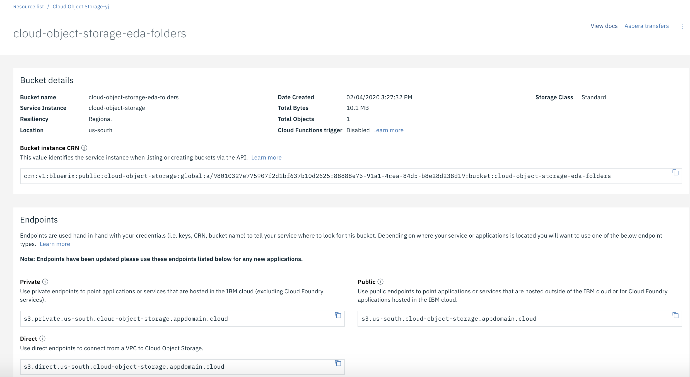
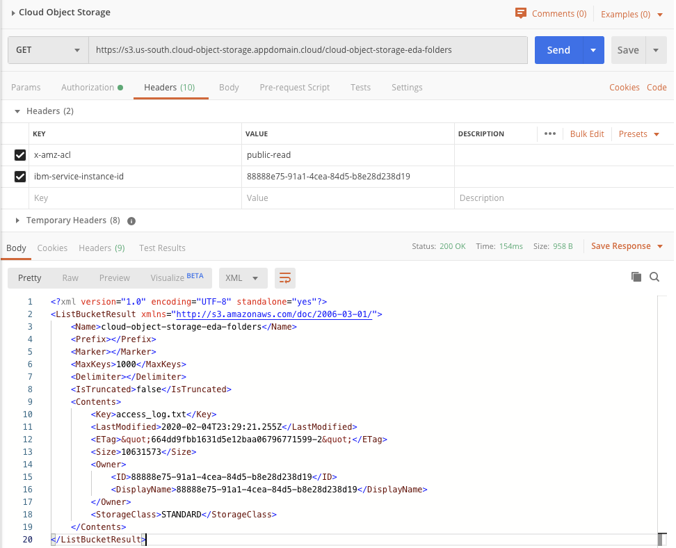

IBM Cloud Object Storage
IBM Cloud Object Storage is a cloud based storage for backup, application data files, persistence storage for analytics.
Characteristics
- Cloud Object Storage is a multi-tenant system, and all instances of Object Storage share physical infrastructure
- Available with three types of resiliency: Cross Region (EU, AP, US), Regional (multiple availability one in a region), and Single Data Center (multiple servers)
- API to access data
- Bucket is the container of the data and defines metadata about the storage: resiliency type, scale

- All buckets in all regions across the globe share a single namespace.
- Bucket configuration defines role based (writer, reader, manager) control access per user
- To get access to the content of a bucket using a application, define a
ServiceID, under the bucket configuration and Access policies, or link an existing service ID to the bocket with some access role. - REST-based API for reading and writing objects: each storage location has its own set of URLs.
Access via CLI
- Login to IBM Cloud:
ibmcloud login -u .... --sso - Install cloud object storage plugin if done done before, or to update version:
ibmcloud plugin install cloud-object-storage - To use the COS plugin, we need to configure it with our region and objectstore‘s unique number, known as a CRN. To get the CRN do the folliwing command using the name of the COS service:
ibmcloud resource service-instance "Cloud Object Storage-yj"Retrieving service instance Cloud Object Storage-yj in all resource groups under account Cloud Client Engagement Team's Account as boyerje@us.ibm.com... OK Name: Cloud Object Storage-yj ID: crn:v1:bluemix:public:cloud-object-storage:global:a/98010327e7....
ibmcloud cos config crnthen enter the crn from previous command in the prompt.- Get the list of buckets:
ibmcloud cos list-buckets - Creating a bucket (name needs to be globally unique):
ibmcloud cos create-bucket --bucket mybucket
Access via API
-
Get the API bearer token
export COS_ADMIN_TOKEN=`ibmcloud iam oauth-tokens | grep IAM | awk '{printf("%s", $4)}'`
-
Get service instance ID (replace with your service id):
export COS_GUID=$(ibmcloud resource service-instance "Cloud Object Storage-yj" | grep GUID | awk '{printf("%s", $2)}') -
Using curl to access the content of a bucket:
curl https://s3.us-south.cloud-object-storage.appdomain.cloud/cloud-object-storage-eda-folders -H "Authorization: Bearer $COS_ADMIN_TOKEN" -H "x-amz-acl: public-read" -H "ibm-service-instance-id: $COS_GUID"

- Download a file:
curl -X GET https://s3.us-south.cloud-object-storage.appdomain.cloud/cloud-object-storage-eda-folders/access_log.txt -H "Authorization: Bearer $COS_ADMIN_TOKEN" -H "x-amz-acl: public-read" -H "ibm-service-instance-id: $COS_GUID" - Other curl commands.